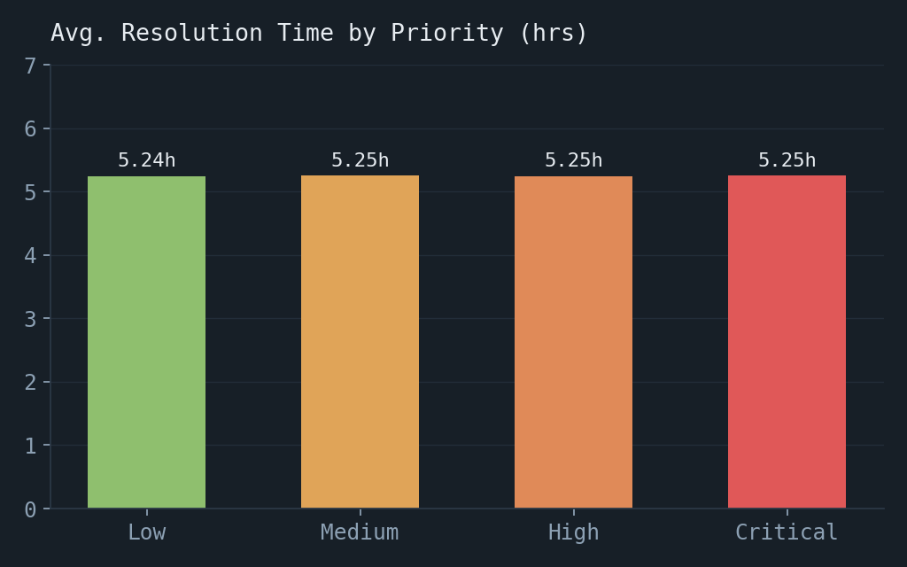
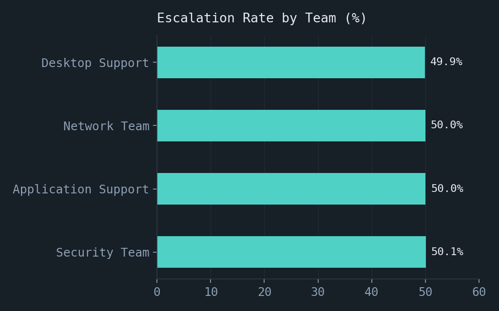
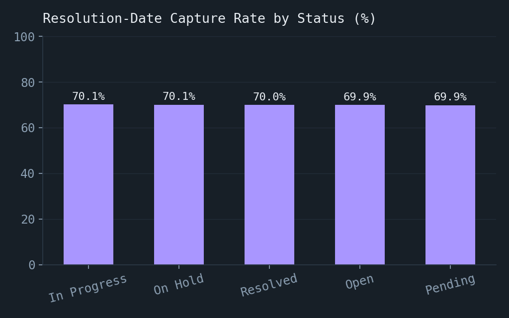
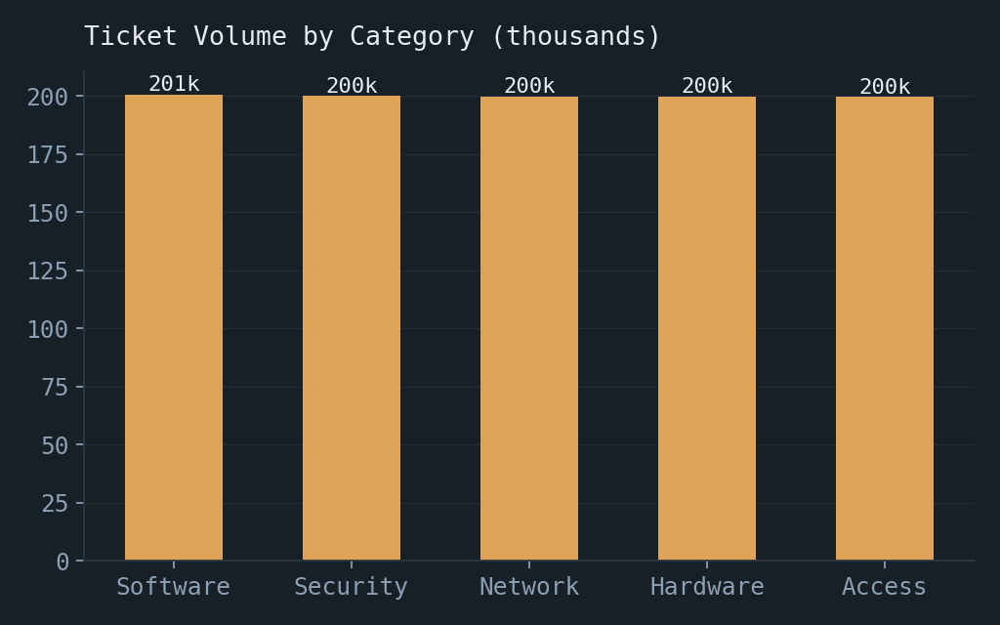
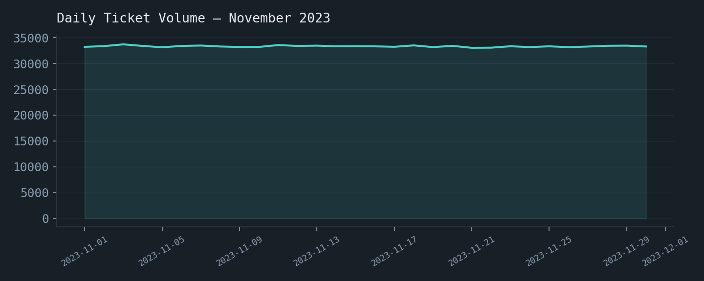

A service request is only as fast as its slowest handoff. The visual makes the bottleneck logic tangible before the detailed explanation.
A root-cause analysis of a 1,000,000-ticket IT helpdesk dataset — and why every dimension that was supposed to differentiate outcomes didn't.
This case study analyzes a simulated IT helpdesk dataset of 1,000,000 tickets logged over November 2023, spanning five categories, four support teams, and four priority levels. The starting business question was simple: is the service desk actually triaging work by priority, and can leadership trust the resolution-time metrics being reported?
The analysis found that average resolution time was statistically flat across every priority level (5.24–5.25 hours), escalation rate was flat at ~50% regardless of team or category, and 30% of tickets — including 30% of tickets marked "Resolved" — had no resolution timestamp at all. None of the fields meant to differentiate how work is handled were actually doing so.
The recommendation isn't a new dashboard — it's three structural fixes: enforce priority-based SLA routing, formalize escalation criteria, and make resolution-timestamp capture mandatory before a ticket can close. Section 11 estimates the impact of the first fix alone.
IT service desks are typically built around a priority system: Critical and High priority tickets are supposed to be triaged and resolved faster than Low priority ones, because they represent bigger business impact — a down production system versus a cosmetic UI bug, for instance. Escalation exists as a safety valve for tickets that a frontline team can't resolve alone.
In this dataset, tickets are logged with a priority, a category, an assigned team, and an escalation flag — the raw ingredients for exactly that kind of differentiated service. Whether those fields are actually influencing how tickets get handled, rather than just being recorded, is the question this case study sets out to answer.
A ticket is created by a user or monitoring system, assigned a category and subcategory (e.g. Security → "Suspicious DLL injection"), given a priority level, and routed to one of four teams. From there it moves through Open → In Progress / Pending / On Hold, may be escalated if the assigned team can't resolve it, and is eventually marked Resolved with a resolution timestamp recorded.
In principle, priority should compress this timeline for urgent tickets, and escalation should correlate with ticket severity and category (e.g. Security incidents escalating more often than routine hardware requests).
The dataset contains 1,000,000 tickets created during November 2023 (~33,300 tickets/day on average, with low day-to-day variance). Fields: Ticket_ID, Date_Created, Date_Resolved, Category, Subcategory, Priority, Status, Assigned_Team, Resolution_Time_Hrs, Description, Escalated.
| Dimension | Distribution |
|---|---|
| Category | Software 20.1% · Security 20.0% · Network 20.0% · Hardware 20.0% · Access 20.0% |
| Priority | Low 25.0% · Medium 25.0% · High 25.0% · Critical 25.0% |
| Status | Resolved 20.1% · On Hold 20.1% · Open 20.0% · In Progress 19.9% · Pending 19.9% |
| Assigned Team | Desktop Support 39.9% · Application Support 20.1% · Security Team 20.0% · Network Team 20.0% |
| Escalated | False 50.0% · True 50.0% |
| Date_Resolved | 30.0% missing (across every status, including "Resolved") |
Two things stood out before any deeper analysis: every categorical field is close to perfectly evenly distributed, and Date_Resolved is missing for 30% of tickets regardless of current status — a data-quality issue worth flagging before trusting any resolution-time KPI built on top of it.
Average resolution time and escalation rate were compared across Priority, Category, Assigned Team, and the top Subcategories (filtered to those with 500+ tickets, to avoid reading noise as signal).
| Priority | Avg. Resolution (hrs) | Escalation Rate |
|---|---|---|
| Low | 5.24 | 50.1% |
| Medium | 5.25 | 49.9% |
| High | 5.25 | 50.0% |
| Critical | 5.25 | 50.0% |
The same flatness held across Category and Assigned Team, and the subcategory with the single highest escalation rate ("Access denied by SIEM policy") sat at 52.9% — only marginally above the 50% baseline, and within the range expected from sampling noise at ~2,000 tickets per subcategory. No dimension showed a meaningful, consistent effect on either resolution time or escalation.
Resolution time does not vary by priority. Critical tickets took 5.25 hours on average to resolve — statistically the same as Low priority tickets at 5.24 hours. A four-level priority system is producing a single, undifferentiated outcome.
Escalation is a coin flip, not a decision. Every team and category escalates almost exactly 50% of tickets. If escalation were tied to genuine severity or team capability, at least some teams or categories should escalate noticeably more or less than others.
Resolution-time reporting has a 30% data gap. Even among tickets marked "Resolved," 30% have no resolution timestamp. Any average resolution-time figure currently being reported is built on 70% of the relevant tickets, silently.
Root cause of Finding 1 — no SLA-driven routing. Priority appears to be a field that's captured but not operationalized: there's no evidence of a queueing or routing rule that pulls Critical tickets to the front. Tickets are most likely worked in the order they arrive (or another priority-blind order), regardless of the label attached to them.
Root cause of Finding 2 — undefined escalation criteria. A flat ~50% escalation rate across every team and category is the signature of a decision with no consistent rule behind it — most consistent with escalation being left to individual agent judgment rather than tied to defined severity thresholds or ticket type.
Root cause of Finding 3 — no closure validation. The ticketing system allows a ticket to move to "Resolved" without requiring a resolution timestamp to be entered. This is a process/system gap, not a random data error — it happens at a constant ~30% rate across every status, suggesting a systemic missing step rather than occasional human error.
This estimate covers Recommendation 1 only (tiered SLA routing for Critical tickets), since it's the fix most directly tied to a measurable time saving. Figures are illustrative and assumption-labeled, shown per 1,000 Critical tickets so they can be rescaled to a real organization's actual ticket volume.
| Metric | Current | Target (assumption) |
|---|---|---|
| Avg. resolution time — Critical | 5.25 hrs | 2.5 hrs |
| Time saved per Critical ticket | 2.75 hrs | |
| Hours saved per 1,000 Critical tickets | 2,750 hrs | |
| At an assumed €45/hr loaded support cost | ≈ €123,750 saved per 1,000 tickets | |





More views — including a live-filterable version of this dashboard — are in the Dashboard Gallery.